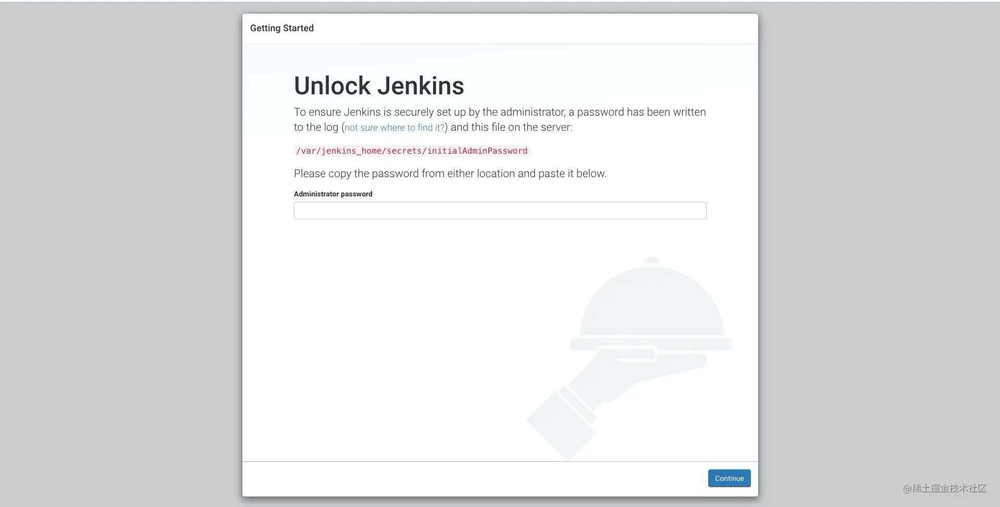
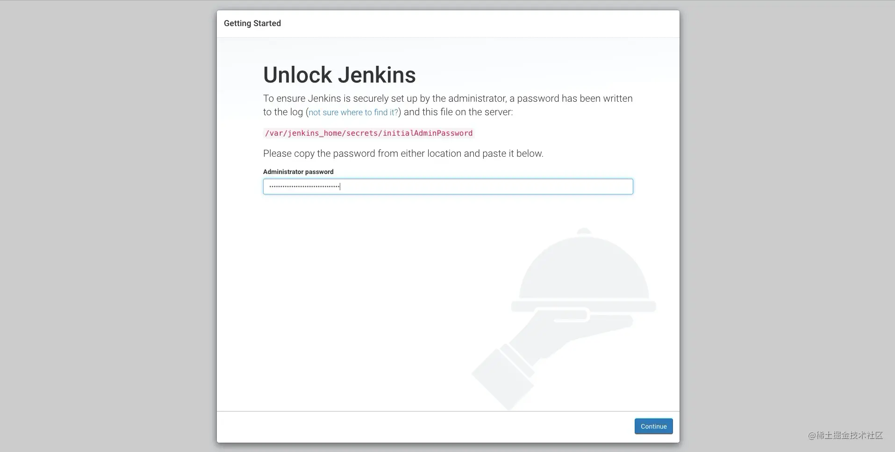
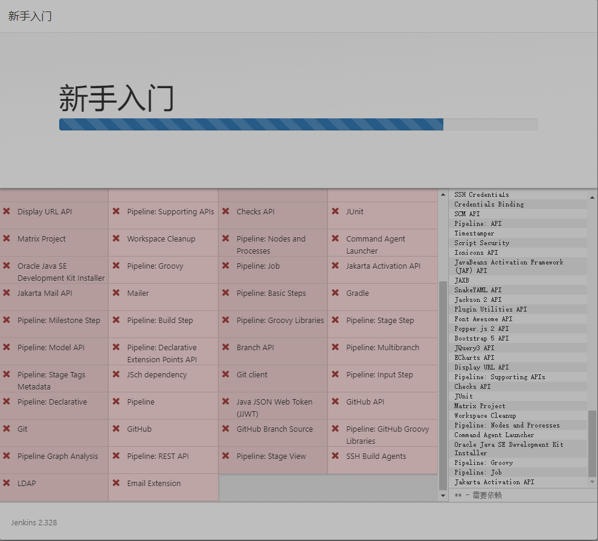
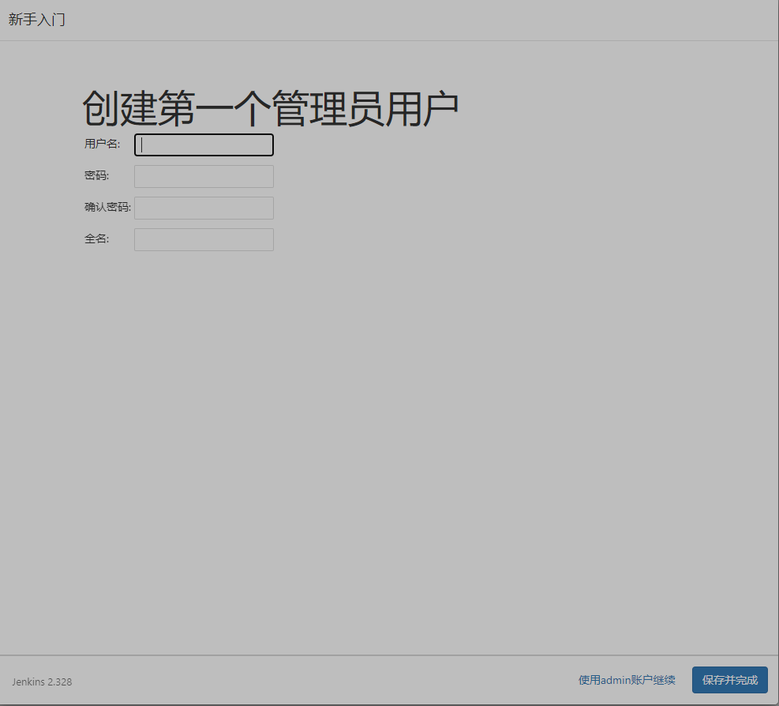
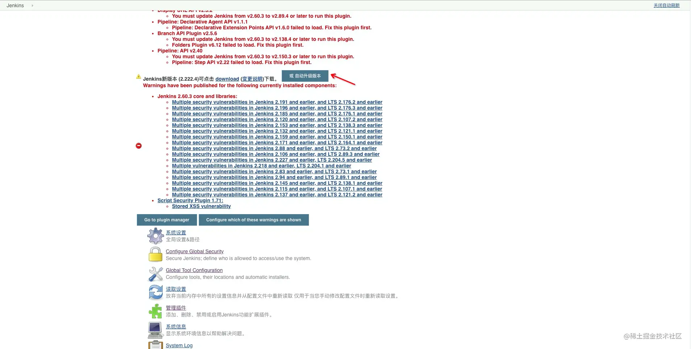
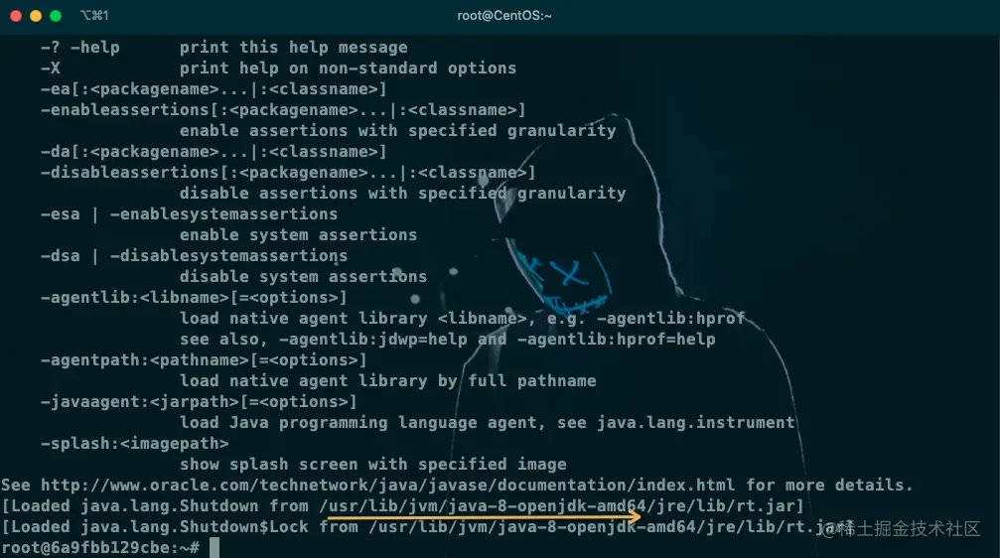
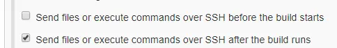
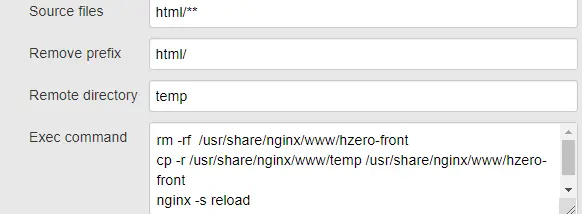

确认是否能安装docker
Docker要求CentOS系统的内核版本高于3.10.通过uname -r命令查看你当前的内核版本。
uname -r
[root@CentOS ~]# 3.10.0-1160.83.1.el7.x86_64
安装docker
[root@baota-1 ~]# yum install docker
启动docker
systemctl start docker
更改docker镜像源
[root@baota-1 ~]# vim /etc/docker/daemon.json
加入阿里云源地址
{"registry-mirrors":["https://6kx4zyno.mirror.aliyuncs.com"]}
重新读取配置
[root@baota-1 ~]# systemctl daemon-reload
重启docker
[root@baota-1 ~]# systemctl restart docker
安装jenkins
下载jenkins镜像
docker pull jenkins
启动jenkins
设置端口为9090并映射jenkins_home到宿主机/home/jenkins_home。
[root@baota-1 jenkins_home]# docker run -d --name jenkins -p 19898:8080 -v /data/jenkins_home:/var/jenkins_home jenkins
可以通过docker ps查看运行的容器。
docker ps
把玩jenkins docker镜像遇到的volume权限问题
在运行启动jenkins的命令时，可能会出现jenkins无法启动情况。
可以通过docker logs 镜像名称查看启动日志。
[root@baota-1 jenkins_home]# docker logs d8e206fa477f
查看输出的日志，如果出现 Permission denied 类似的错误。需要删除旧容器重新运行。
[root@baota-1 jenkins_home]# docker rm jenkins
运行命令加入了-u 0重新运行。
[root@baota-1 jenkins_home]# docker run -d --name jenkins -p 19898:8080 -v /data/jenkins_home:/var/jenkins_home -u 0 jenkins
Jenkins初始化
启动成功后输入 http://服务器:9090/
如果无法访问，请检查一下防火墙端口是否开放，如果是云服务器还需要检查安全组设置

首次启动jenkins需要输入密码，需要进入容器内获取密码。密码位于/var/jenkins_home/secrets/initialAdminPassword。
进入容器
[root@baota-1 secrets]# docker exec -it jenkins /bin/bash
获取密码
root@fd12fe04aaf7:/var/jenkins_home# cat /var/jenkins_home/secrets/initialAdminPassword
由于我们将/var/jenkins_home -- 挂载到--> /home/jenkins_home所以也可以直接cat /home/jenkins_home/secrets/initialAdminPassword 获取密码。
输入密码以后，安装需要的插件，在安装途中由于网络原因会出现有些插件安装失败，这个可以不用理会。


不论你选什么，都会出现这个

解决方案
[root@baota-1 data]# docker stop jenkins
[root@baota-1 data]# docker stop jenkins
[root@baota-1 data]# rm -rf /data/jenkins_home/
[root@baota-1 data]# docker pull jenkins/jenkins
[root@baota-1 jenkins_home]# docker run -d --name jenkins -p 19898:8080 -v /data/jenkins_home:/var/jenkins_home jenkins/jenkins
[root@baota-1 data]# chmod 777 /data/jenkins_home
[root@baota-1 data]# docker run -d --name jenkins -p 19898:8080 -v /data/jenkins_home:/var/jenkins_home jenkins/jenkins
[root@baota-1 data]# docker start jenkins

输入密码以后，安装需要的插件，在安装途中由于网络原因会出现有些插件安装失败，这个可以不用理会。

设置jenkins的默认登录账号和密码

处理插件安装失败
进入jenkins的主页面右上角可能会出现一些报错信息，主要是提示jenkins 需要的某些插件没有安装，或者说jenkins版本太低了，插件无法使用这个时候我们需要先升级jenkins做一个升级。

自动升级
Jenkins提供了自动升级的方式 
手动升级
可以去Jenkins的官网下载好最新jar包上传到服务器，也可以使用wget命令。
wget http://jenkins新版本的下载地址
#目前最新2.239
wget http://updates.jenkins-ci.org/download/war/2.239/jenkins.war
Jenkins的更新主要是替换jenkins镜像里面的war包 ，我们可以把下载好的war包使用docker cp直接进行复制命令如下：
docker cp jenkins.war jenkins:/usr/share/jenkins
重新启动Jenkins即可完成升级。
docker restart jenkins
安装必要的插件
- Localization: Chinese (Simplified) 1.0.14 汉化包 搜索关键字 chinese
- Publish Over SSH 1.20.1 搜索关键字 ssh
- DingTalk 钉钉通知 2.3.0
配置jenkins
全局工具配置
主要配置 jdk、maven、git等常用环境。需要注意配置的别名，后续构建将会使用到。
配置jdk
因为jenkins镜像自带jdk所以无需安装直接使用即可，进入Jenkins容器，使用java -verbose查看java安装路径。
docker exec -it jenkins /bin/bash
java -verbose


配置git
进入容器内使用whereis git即可查询到git安装路径。
root@6a9fbb129cbe:~# whereis gitgit: /usr/bin/git /usr/share/man/man1/git.1.gzroot@6a9fbb129cbe:~#

jenkins 构建后传输文件到服务器
在部署前端项目的时候需要将打包生成的dist文件夹传输到服务器特定目录。而链接服务器的时候需要用到ssh，所以需要一个关键的插件 publish-over-ssh 该插件可以去插件管理进行安装。
以下为具体步骤：
安装publish-over-ssh插件
进入系统管理 -> 系统配置 -> SSH Servers, 设置好name、HostName、UserName、Remote Directory；点高级，根据情况，可以设置密码或者ssh key。其它的无需更改。
进入你的项目，点击左侧配置，找到 绑定
根据情况可以配置以下两项

image.png
。ssh server选择刚才添加的server。在transfer中设置 以下选项

image.png
各个参数的意思分别如下：
- source files： 源文件。如果要传输文件夹内所有文件和文件夹则需要在文件夹路径后加两个*符号，如上图所示；
- Remove Prefix：移除前缀，是指源文件的前缀，比如现在我们只是传输html文件夹里的所有文件，但是html文件夹本身不需要在远程服务器出现，那么就需要将其移除，如上图所示；
- Remote directory 远程服务器目录，注意该目录是相对于刚刚系统设置里ssh servers里设置的路径
- exec command 在传输完成后执行的命令，一般为清理文件、复制文件、重启一些服务等等。 至此，已经配置完毕。